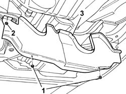
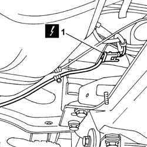
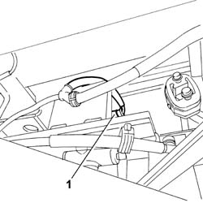
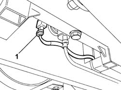

1058A90 CNG INJECTION WIRING HARNESS - ARRANGE
- Path
- Procedures > 10 ENGINE UNIT > 1058 GAS CIRCUIT > 1058A GAS CIRCUIT MULTI POINT INJECTION > 1058A90 CNG INJECTION WIRING HARNESS - ARRANGE
- Kind
- repair procedure (removal / refitting; the operation number is the code)
- Applies to
- engines: 2.0 16V; all production periods
- Interactive page
- https://sloeber94.github.io/elrnDB-fDct/en/#/244002707
Applies to: engines: 2.0 16V; all production periods
 Removing
Removing
 Refitting
RefittingPosition the vehicle on the lift.
Disconnect the negative battery terminal.
Raise the vehicle.
1. Undo the retaining nuts.
2. Remove the fastening studs.
3. Remove vertical guard from its seat.

Applies to: engines: 2.0 16V; all production periods
1. Disconnect the electrical coupling.
Description | Connector | |
|---|---|---|
1 | Engine / injection coupling | D193 |

Applies to: engines: 2.0 16V; all production periods
1. Disconnect the electrical connections for the cut out solenoid valves on the canisters.

Applies to: engines: 2.0 16V; all production periods; only with equipment: Upgraded autonomy
1. Disconnect the electrical connections for the cut out solenoid valves on the additional canisters.

Applies to: engines: 2.0 16V; all production periods
Release the wiring from the fastenings on the body and remove it.
Applies to: engines: 2.0 16V; all production periods
Refitting
RemovingPlace the wiring in position and secure it to the bodyshell using the special fastenings.
Applies to: engines: 2.0 16V; all production periods; only with equipment: Upgraded autonomy
Connect the electrical connections for the cut out solenoid valves on the additional canisters.
Applies to: engines: 2.0 16V; all production periods
Connect the electrical connections for the cut out solenoid valves on the canisters.
Connect the electrical coupling.
Description | Connector | |
|---|---|---|
- | Engine / injection coupling | D193 |
Place the vertical shield in position.
Secure the vertical guard using the special buttons and fixing nuts.
Lower the vehicle.
Connect the negative battery terminal.
Remove the vehicle from the lift.